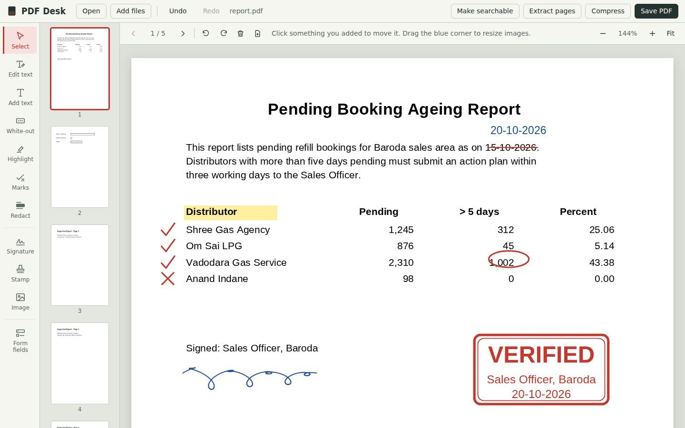
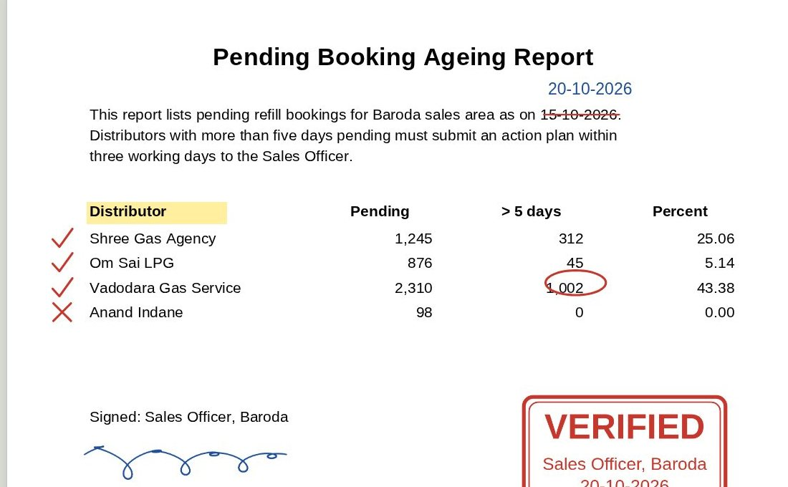
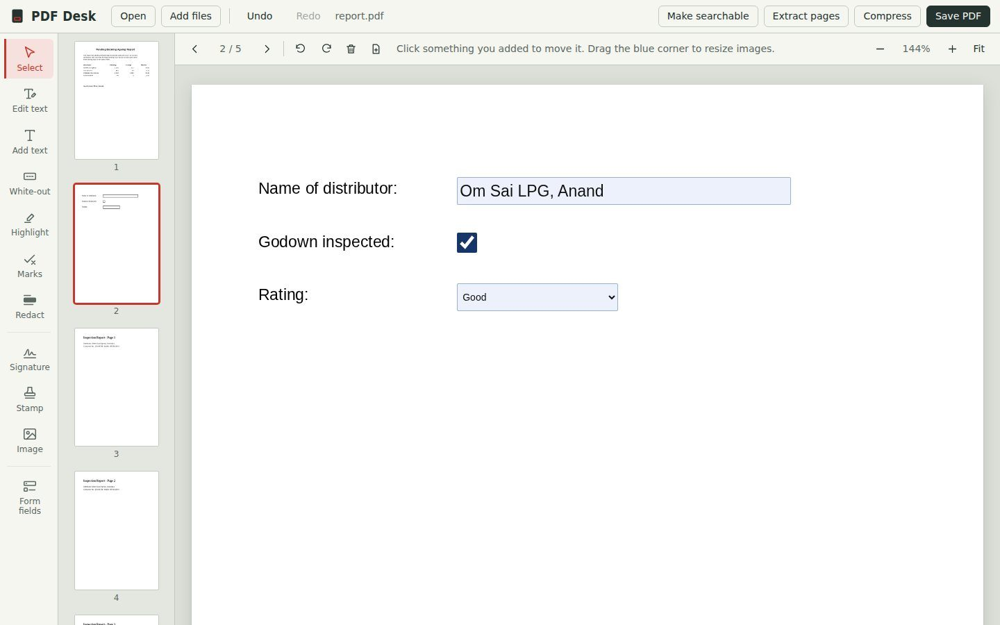
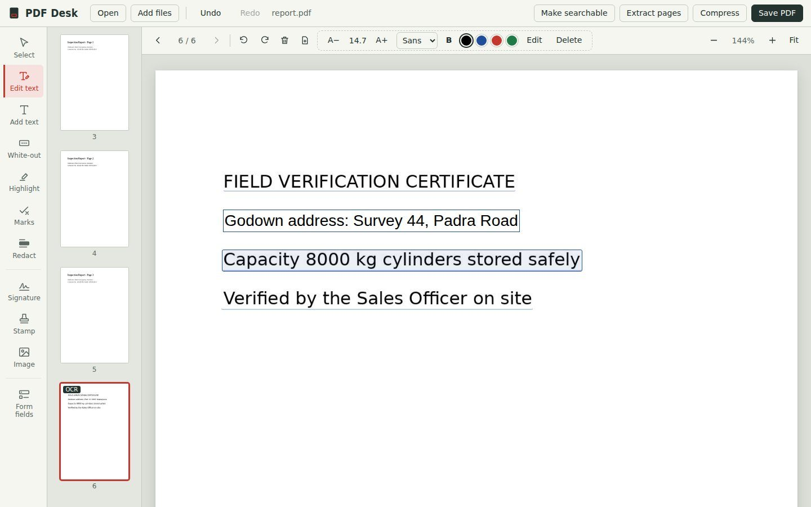

Edit PDFs without sending them anywhere.
Change text, sign, stamp, tick, redact and fill forms, even on scanned pages. Free for everyone, nothing to install, and your files stay on your Windows computer.
Free for everyone, no sign-up. Windows 10 or 11 with Chrome or Edge. About 10 MB.

Nothing to install
Unzip the folder and double-click PDF Desk.html. No admin rights needed. Runs from the desktop or a pen drive.
Works offline
Editing and text recognition run inside your browser. No internet needed once it is on your computer.
Private by design
Your PDFs are never uploaded. PDF Desk makes no online requests at all: no account, no tracking, no ads.
Everything you do to a PDF at your desk
Built for office paperwork: reports, letters, circulars, application forms and scanned certificates.
Correct and review
- Edit existing textClick any line and retype it. PDF Desk matches the size, colour and style of the original and covers the old words.
- Add textClick anywhere and type. Choose size, font, bold and colour.
- MarksTick, cross, strike off, underline, circle, box, arrow, dot and freehand pen, in red, blue, green or black. Strike-offs snap straight.
- Highlight and white-outHighlight what matters, or cover a mistake with white.
- RedactBlack out consumer numbers, Aadhaar or phone numbers. On saving, those areas are permanently erased, not just covered.

Sign, stamp and fill
- SignatureDraw it with the mouse, or upload a photo of your signature on paper. The white background is removed automatically, and your signature is remembered for next time.
- StampsApproved, Verified, Received, Checked, Rejected or your own words, with your name or designation and today’s date.
- Fill PDF formsType into fillable PDFs, tick their checkboxes and choose from their dropdowns. Answers are locked in when you save.
- Build your own formsAdd text boxes, paragraph boxes, checkboxes, dropdowns and date fields to any PDF. The saved file can be filled in Chrome, Edge or Adobe Reader.
- Images and logosPlace a photo or logo anywhere and resize it.

Scans and file size
- Make scans searchableReads the words on scanned pages and phone photos of documents, so you can search and copy them. English text, about 5 to 15 seconds a page.
- Edit words on scansAfter reading a scan, click any line to correct it, just like a typed PDF.
- CompressShrinks scans and photos for portal upload limits, keeping text sharp. Shows the size before and after.

Pages and files
- MergeJoin several PDFs and photos into one file, in the order you add them.
- Extract pagesSave chosen pages, like 1-3 and 7, as a new PDF.
- Reorder, rotate, deleteDrag page thumbnails into place. Rotate or remove pages in one click.
- Blank pagesInsert a blank page of the same size to write notes or add a cover.
- Photos to PDFDrop phone photos of documents in and they become A4 pages, turned the right way up.
- Undo everythingCtrl+Z steps back through any change, including deleted pages.
Free for everyone. Every feature.
No trial, no paid version, no account and no ads. Use it at work and at home, on as many computers as you like, and share the zip with colleagues.
Start in under a minute
Download and unzip
Get the latest zip from the Releases page and unzip it anywhere: Desktop, Documents or a pen drive.
Double-click PDF Desk.html
It opens in Chrome or Edge. Keep the
libfolder next to it. If it opens in another program, right-click and choose Open with Microsoft Edge.Open a PDF and edit
Drop a PDF or photos onto the window, make your changes, then press Save PDF. The edited copy goes to your Downloads folder.
Questions
Are my files really never uploaded?
Yes. PDF Desk is a set of files on your computer that runs inside your browser. Opening, editing and text recognition all happen on your machine, and the app makes no online requests at all.
Does it work without internet?
Yes. Every feature works fully offline, including reading scanned pages.
Will edited text look exactly like the original?
Very close. PDF Desk matches the size, colour and boldness, and uses a standard Arial, Times or Courier style font. If the original used an unusual font, the new words may look slightly different. Use A− and A+ to fine-tune the size.
Can it read scanned documents?
Yes. “Make searchable” reads English text from scanned pages, typically 5 to 15 seconds per page. After that you can search, copy, edit and convert the text.
Is white-out the same as redaction?
No. White-out and Edit text cover the old words, but they can still be copied out of the file. Redact permanently removes the content from the page when you save. Use Redact for anything confidential.
Which computers does it support?
Windows 10 or 11 with Google Chrome or Microsoft Edge. It also runs on Mac and Linux in Chrome, though it is designed and tested for Windows.
Is it really free? What is the catch?
It is free, with no paid version, no ads and no data collection. It is built on free open-source libraries, credited at the bottom of this page.
Can it convert PDF to Word or Excel?
No. PDF Desk focuses on editing, signing and forms. To get the text out of a PDF, open it in PDF Desk, run “Make searchable” if it is a scan, then copy the text.